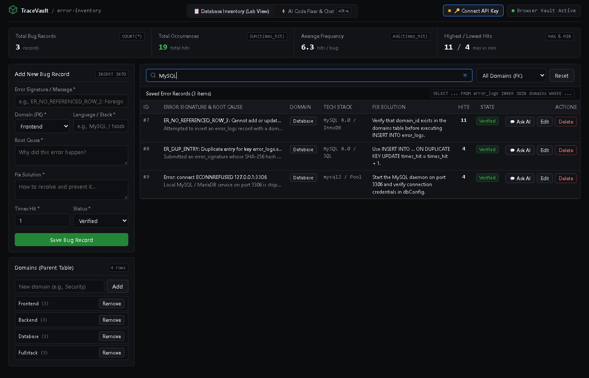

1. Project Objective & Topic Selection
The objective of this laboratory project is to develop, deploy, and evaluate a single-page application (SPA) backed by a normalized relational database (MySQL 8.0) demonstrating end-to-end CRUD operations (Create, Read, Update, Delete) and real-time SQL aggregation. Under the designated topic of Inventory Management, TraceVault manages an operational repository of software bugs, runtime exceptions, occurrence frequencies, and verified engineering solutions. The project satisfies all core academic requirements:
- Strict relational table normalization adhering to Third Normal Form (3NF) with foreign key referential integrity.
- Comprehensive execution of core SQL queries:
CREATE, INSERT, SELECT, UPDATE, and DELETE.
- Real-time telemetry computing five SQL aggregate functions:
COUNT(), SUM(), AVG(), MAX(), and MIN().
- Fluid single-page user interface without page reloads, featuring live search, modal dialogs, and instant deduplication.
2. Tools and Technologies Used
- Database Management System (RDBMS): MySQL 8.0 / MariaDB utilizing the
InnoDB ACID-compliant storage engine, enforcing primary keys, foreign key cascading updates, and ON DELETE RESTRICT integrity rules.
- Backend Server & API Runtime: Node.js (v22 LTS) with Express.js 4.19, utilizing
mysql2/promise for connection pooling (10 connections) and express-rate-limit for endpoint security.
- Frontend User Interface: Single-Page Application built with semantic HTML5, CSS3 Matte Carbon Design System, and modern ES6+ JavaScript utilizing the Fetch API and DOM dialogs.
- Cryptographic Deduplication: Node.js
crypto and Web Crypto API generating deterministic SHA-256 fingerprint hashes.
3. Database Table Design (3NF Normalization)
The database schema strictly adheres to Third Normal Form (3NF), eliminating update, insertion, and deletion anomalies by separating domain classifications from discrete error records into two tables:
| Table |
Field / Column |
Data Type |
Key / Constraints |
Description |
| domains |
domain_id |
INT |
PRIMARY KEY, AUTO_INCREMENT |
Unique domain category identifier |
| (Parent) |
domain_name |
VARCHAR(50) |
NOT NULL, UNIQUE |
Classification label (Frontend, Backend, etc.) |
|
description |
VARCHAR(255) |
NOT NULL |
Architectural domain scope |
|
created_at |
TIMESTAMP |
DEFAULT CURRENT_TIMESTAMP |
Registration timestamp |
| error_logs |
error_id |
INT |
PRIMARY KEY, AUTO_INCREMENT |
Unique incident record identifier |
| (Child) |
domain_id |
INT |
FOREIGN KEY → domains |
FK constraint (ON UPDATE CASCADE ON DELETE RESTRICT) |
|
tech_stack |
VARCHAR(100) |
NOT NULL |
Technology ecosystem (e.g. React 18, MySQL, Node.js) |
|
error_signature |
VARCHAR(255) |
NOT NULL |
Canonical runtime error exception string |
|
signature_hash |
CHAR(64) |
NOT NULL, UNIQUE |
Deterministic SHA-256 fingerprint for deduplication |
|
root_cause |
TEXT |
NOT NULL |
Mechanistic explanation of the defect |
|
fix_requirements |
TEXT |
NOT NULL |
Verified remediation code and instructions |
|
times_hit |
INT |
NOT NULL, DEFAULT 1, CHECK ≥ 1 |
Occurrence frequency counter |
|
is_verified |
TINYINT(1) |
NOT NULL, DEFAULT 1 |
Verification state (1 = Verified, 0 = Pending) |
|
created_at |
TIMESTAMP |
DEFAULT CURRENT_TIMESTAMP |
Record registration timestamp |
4. Entity-Relationship (ER) Diagram & Relational Architecture
The Entity-Relationship (ER) model below illustrates the structural design, entity relationships, and integrity constraints governing TraceVault. The parent entity DOMAINS maintains a one-to-many (1:N) relationship with the child inventory entity ERROR_LOGS. An error incident must strictly belong to exactly one domain category, while a domain category can classify multiple error incidents.
Figure 1: Full Relational Entity-Relationship Diagram depicting 1:N cardinality, Primary/Foreign Keys, and field constraints.
A. Cardinality & Referential Integrity Rules
- Parent Key → Foreign Key Mapping: The
domain_id in the parent table domains acts as the Primary Key and is mapped to domain_id in error_logs as a Foreign Key (fk_error_domain).
- ON UPDATE CASCADE: If a domain's primary identifier is updated, the relational engine automatically cascades the modification across all dependent child error logs.
- ON DELETE RESTRICT: Deletion of a parent domain is strictly blocked by InnoDB if any child error record references it. This prevents orphan records and guarantees database integrity.
B. Third Normal Form (3NF) Normalization Breakdown
- First Normal Form (1NF): All table columns contain atomic, non-decomposable values. No repeating groups or array values are stored.
- Second Normal Form (2NF): All non-key attributes (e.g.,
tech_stack, error_signature, root_cause) are fully functionally dependent on the entire primary key (error_id).
- Third Normal Form (3NF): There are no transitive dependencies. Domain names and descriptions belong exclusively to the
domains table rather than repeating across individual error records.
5. Key SQL Queries for Database Operations (Part 1)
The following SQL statements demonstrate the practical database operations executing within TraceVault for schema definition, record creation, and dynamic filtering:
A. DDL: Table Definition & Foreign Key Constraints
-- 1. Create Parent Table (Domains)
CREATE TABLE IF NOT EXISTS domains (
domain_id INT AUTO_INCREMENT PRIMARY KEY,
domain_name VARCHAR(50) NOT NULL UNIQUE,
description VARCHAR(255) NOT NULL,
created_at TIMESTAMP DEFAULT CURRENT_TIMESTAMP
) ENGINE=InnoDB;
-- 2. Create Child Table (Error Logs) with Foreign Key RESTRICT
CREATE TABLE IF NOT EXISTS error_logs (
error_id INT AUTO_INCREMENT PRIMARY KEY,
domain_id INT NOT NULL,
tech_stack VARCHAR(100) NOT NULL,
error_signature VARCHAR(255) NOT NULL,
signature_hash CHAR(64) NOT NULL UNIQUE,
root_cause TEXT NOT NULL,
fix_requirements TEXT NOT NULL,
times_hit INT NOT NULL DEFAULT 1 CHECK (times_hit >= 1),
is_verified TINYINT(1) NOT NULL DEFAULT 1,
created_at TIMESTAMP DEFAULT CURRENT_TIMESTAMP,
CONSTRAINT fk_error_domain FOREIGN KEY (domain_id) REFERENCES domains (domain_id)
ON UPDATE CASCADE ON DELETE RESTRICT
) ENGINE=InnoDB;
B. DML: Record Insertion & Deduplication (INSERT with ON DUPLICATE KEY UPDATE)
INSERT INTO error_logs
(domain_id, tech_stack, error_signature, signature_hash, root_cause, fix_requirements, times_hit, is_verified)
VALUES (?, ?, ?, ?, ?, ?, ?, ?)
ON DUPLICATE KEY UPDATE
times_hit = times_hit + VALUES(times_hit),
domain_id = VALUES(domain_id),
tech_stack = VALUES(tech_stack),
root_cause = VALUES(root_cause),
fix_requirements = VALUES(fix_requirements),
is_verified = VALUES(is_verified);
C. DML: Relational Join with Multi-Field Filtering (SELECT + INNER JOIN + WHERE)
SELECT e.error_id, e.domain_id, d.domain_name, e.tech_stack, e.error_signature,
e.signature_hash, e.root_cause, e.fix_requirements, e.times_hit, e.is_verified, e.created_at
FROM error_logs e
INNER JOIN domains d ON e.domain_id = d.domain_id
WHERE (e.domain_id = ? OR ? = 'all')
AND (e.error_id = ? OR e.error_signature LIKE ? OR e.tech_stack LIKE ? OR e.root_cause LIKE ?)
ORDER BY e.error_id ASC;
5. Key SQL Queries for Database Operations (Part 2)
D. DML: Real-Time Telemetry via SQL Aggregate Functions
SELECT
COUNT(e.error_id) AS total_bugs,
COALESCE(SUM(e.times_hit), 0) AS total_hits,
COALESCE(ROUND(AVG(e.times_hit), 1), 0.0) AS avg_hits,
COALESCE(MAX(e.times_hit), 0) AS max_hits,
COALESCE(MIN(e.times_hit), 0) AS min_hits,
COALESCE(SUM(CASE WHEN e.is_verified = 1 THEN 1 ELSE 0 END), 0) AS verified_count
FROM error_logs e
LEFT JOIN domains d ON e.domain_id = d.domain_id
WHERE (e.domain_id = ? OR ? = 'all') AND (e.error_signature LIKE ? OR e.tech_stack LIKE ?);
E. DML: Record Mutation & Safe Deletion (UPDATE & DELETE)
-- Update record by Primary Key error_id
UPDATE error_logs
SET domain_id = ?, tech_stack = ?, error_signature = ?, signature_hash = ?,
root_cause = ?, fix_requirements = ?, times_hit = ?, is_verified = ?
WHERE error_id = ?;
-- Delete error record after user modal confirmation
DELETE FROM error_logs WHERE error_id = ?;
6. Sample Data Demonstration (12 Seeded Records)
The database contains 12 seed records across 4 domains (exceeding the course requirement of 10 records):
| ID |
Domain (FK) |
Tech Stack |
Canonical Error Signature |
Hits |
| #1 | Frontend (1) | Fetch API / CORS | Access to fetch at origin has been blocked by CORS policy | 15 |
| #2 | Frontend (1) | React 18 / Hooks | Too many re-renders. React limits the number of renders to prevent infinite loop | 9 |
| #3 | Frontend (1) | Next.js 14 / SSR | Hydration failed because the initial UI does not match what was rendered | 7 |
| #4 | Backend (2) | Node.js / Express | Error [ERR_HTTP_HEADERS_SENT]: Cannot set headers after they are sent | 12 |
| #5 | Backend (2) | Node.js / TCP | Error: listen EADDRINUSE: address already in use :::3000 | 6 |
| #6 | Backend (2) | Express / JSON | SyntaxError: Unexpected token in JSON at position 0 in body-parser | 5 |
| #7 | Database (3) | MySQL 8.0 / InnoDB | ER_NO_REFERENCED_ROW_2: Cannot add or update child row: foreign key fails | 11 |
| #8 | Database (3) | MySQL 8.0 / SQL | ER_DUP_ENTRY: Duplicate entry for key error_logs.signature_hash | 4 |
| #9 | Database (3) | mysql2 / Pool | Error: connect ECONNREFUSED 127.0.0.1:3306 | 4 |
| #10 | Fullstack (4) | JWT / Auth | JsonWebTokenError: invalid signature on protected API route | 8 |
| #11 | Fullstack (4) | Prisma / Env | Error: Environment variable not found: DATABASE_URL | 2 |
| #12 | Fullstack (4) | WebSockets / TLS | Mixed Content: Page at HTTPS requested an insecure ws:// endpoint | 2 |
7. Single-Page Application Architecture & User Interface
TraceVault functions strictly as a single-page application. All record creation, table viewing, searching, modal updates, and deletions occur within one responsive interface without full-page reloads.
Figure 2: TraceVault Single-Page Inventory Overview — Showing real-time SQL aggregate KPI cards (COUNT(*), SUM(times_hit), AVG(times_hit), MAX & MIN), left-hand INSERT INTO submission form, parent domain list, and normalized 8-column records table.
8. Interactive Application Features in Action

Figure 3: Live SQL Search & Filtering: Dynamically querying across error signature, tech stack, and root cause while aggregate metrics recalculate in real time.

Figure 4: Modal Update Dialog: In-place editing via UPDATE ... WHERE error_id = ? with client and server-side integrity validation before saving.
Figure 5: Live Code Bug Fixer Workbench (Alt + L) — Interactive diagnostic workspace featuring language auto-detection, local heuristic analysis, and 1-click database commit.
9. Lab Evaluation Compliance & Conclusion
The TraceVault project fully satisfies all requirements stipulated in the DBMS Laboratory evaluation guidelines:
- Single-Page Architecture: All functional requirements (insert, view, filter, edit, delete, telemetry) operate on one page without navigation reloads.
- Database Requirements: Strict 3NF schema featuring explicit Primary Keys, Foreign Key with
ON UPDATE CASCADE ON DELETE RESTRICT, unique SHA-256 indexes, and CHECK (times_hit >= 1) constraints.
- SQL Command Coverage: Production-grade implementation of
CREATE, INSERT, SELECT (with INNER JOIN and WHERE), UPDATE, and DELETE.
- SQL Aggregate Functions: Full implementation of five aggregate functions (
COUNT, SUM, AVG, MAX, MIN) displayed on live metric cards.
- Demonstration Data: 12 verified engineering records across 4 parent domains, fully seeded and ready for live lab evaluation.